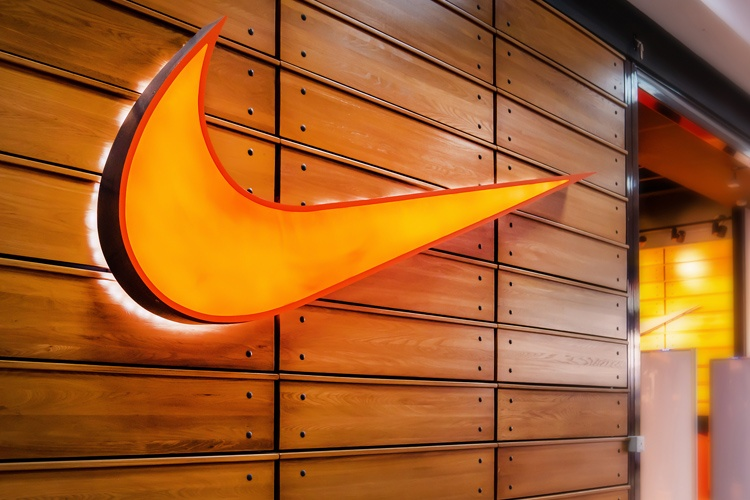
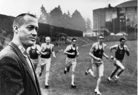
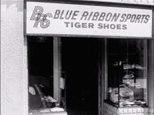
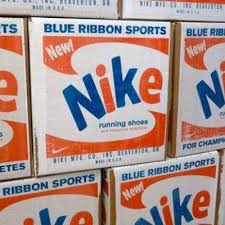
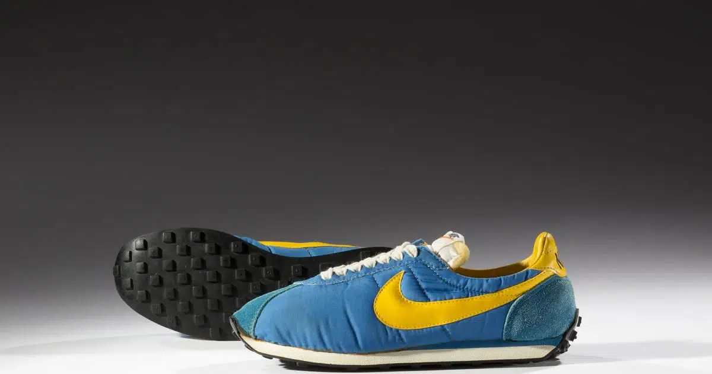
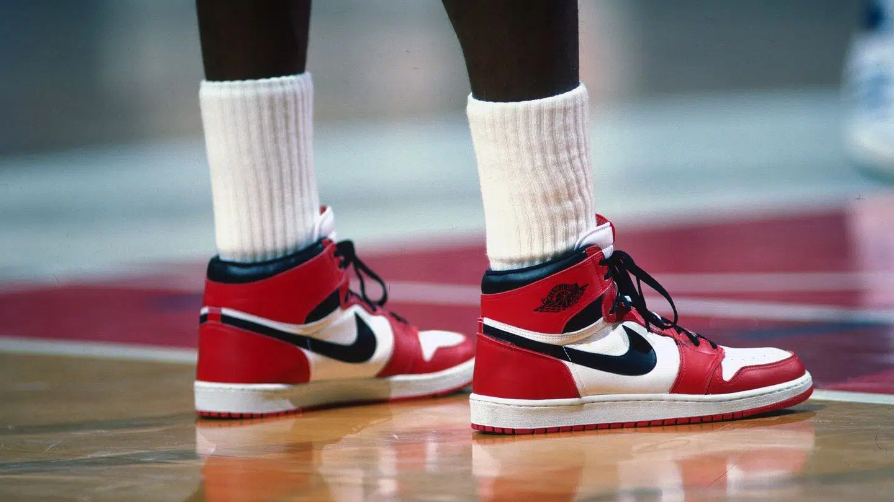

Historia
Origem e evolução da empresa de calçados
Em primeiro lugar, a Nike é uma empresa de roupas e calçados fundada no início da década de 70, nos Estados Unidos. Nesse sentido, desde os primórdios, a história da empresa se mescla com a história do tênis, uma vez que ela foi essencial para influenciar e designar referências e tendências no mercado.
A história da Nike começa em Phil Knight e Bill Bowerman, em 1971, em Oregon (EUA). A dupla de empresários tinha a intenção de “trazer inspiração e inovação para cada atleta do mundo” e começou a atuação modificando tênis importados do Japão. Em contrapartida, no Brasil, a empresa só chegou em 1988. Apesar disso, a primeira loja própria só chegou aqui 20 anos depois, em 2008.
Curiosamente, estima-se que a Nike seja a marca de roupas mais valiosas do mundo, segundo o ranking BrandZ. Desse modo, avalia-se a empresa no valor de 37.472 bilhões de dólares. Ademais, figuras públicas como Cristiano Ronaldo, Kevin De Bruyne, Rafael Nadal, Lebron James e outros tem patrocínio com a empresa há anos, tornando-a ainda mais influente.
Fundação e o início da história da Nike
Tudo começa com a Blue Ribbon Sports, em 1964. Na ocasião Phil Knight havia acabado de sair da Universidade de Oregon, onde fez parte da equipe de atletismo. Por causa disso, Phil era próximo de Bill Bowerman, treinador da modalidade.
Bowerman tinha muito interesse no crescimento técnico de seus atletas, mas não parava por aí. Um de seus principais esforços, por exemplo, estava na otimização dos calçados de corrida com a ajuda de um sapateiro local. Um dos primeiros modelos desenvolvidos por ele, inclusive, foi testado por Knight. O tênis seria o primeiro passo para a história da Nike.
A princípio, era só um teste, mas tudo deu tão certo que o companheiro de equipe de Knight – Otis Davis – ganhou ouro nos 400 metros das Olimpíadas de 1960 com ajuda dos sapatos.
Após a graduação em Oregon, Knight foi fazer um MBA em Stanford, mas não deixou a antiga paixão de lado. Isso porque ele ainda estudava a produção de tênis de corrida, sugerindo que o Japão deveria ser o novo grande centro para o mercado, ao invés da Alemanha.
Dessa maneira, Knight decidiu viajar ao Japão, onde conseguiu firmar um acordo de importação de calçados da marca Tiger. A parceria foi suficiente para trazer Bowerman para o empreendimento, visto que o treinador também não estava satisfeito com os modelos alemães. Da parceria, surgiu a Blue Ribbon Sports, em 25 de janeiro de 1964.
Ainda que desenvolvesse calçados alternativos e mais baratos, Knight conseguiu um ótimo sucesso inicial com a Blue Ribbon Sports. O público teve uma boa recepção para a qualidade dos tênis importados, que estavam no mesmo nível de Adidas e Puma, dominantes no mercado.
Com apenas um ano de empresa, Bowerman decidiu inovar e propôs um novo modelo de calçados que mudaria a história da Nike. A ideia era oferecer um melhor suporte para corredores a partir de uma palmilha almofadada, bem como incluir borrachas de esponja no ante pé e parte superior do calcanhar (esponja macia) e no meio meio do calcanhar (esponja dura). Além disso, o novo modelo iria contar com uma sola emborrachada mais firme.
O novo modelo de tênis precisou de dois anos para ser lançado no mercado e, em 1967, chegou às lojas como um sucesso imediato.
O sucesso, no entanto, incomodou os japoneses da Tiger. Knight defendia que a Tiger queria colocar fim ao contrato de exclusividade com a Blue Ribbon, enquanto a empresa japonesa acusava a Blue Ribbon de vender uma versão própria de seus tênis sob o nome Nike,
Separação e nome Nike
A tensão entre as duas empresas provocou uma separação formal em 1971. A separação veio logo após um processo da Tiger, mas permitia que as duas empresas vendessem suas próprias versões do novo modelo de tênis. Dessa maneira, o mesmo calçado podia ser encontrado sob as marcas Nike Cortez e Tiger Corsair (que se tornaria Asics).
A separação também trouxe uma reformulação na Blue Ribbon, que mudou oficialmente de nome para Nike. A princípio, Knight pensou no nome Dimensão 6, mas a inspiração na deusa grega da vitória acabou sendo definitiva para a escolha do novo nome.
Ao mesmo tempo, a nova empresa também precisava de um novo design de marca. Foi assim que a Nike chegou até Carolyn Davis, estudante de design da Universidade Estadual de Portland. O trabalho custou apenas US$ 2 por hora, resultando num total de US$ 35 pela marca que tornou-se uma das mais populares do mundo.
No entanto, alguns anos depois, Phil Knight concedeu 500 ações da Nike para Carolyn Davis. O valor atualmente é estimado em cerca de US$ 1 milhão.
Revolução do Waffle Trainer
A história da Nike continuou a replicar o sucesso estabelecido pela Blue Ribbon Sports. Logo após o destaque do modelo Tiger Cortez, Bowerman voltou a revolucionar a história do tênis com o conceito do design Waffle.
Durante um café da manhã, o treinador observou as marcas dos sulcos do waffle que comia e teve a inspiração para um novo solado. Bowerman pensou como aquelas marcas ficariam invertidas e decidiu derramar uretano derretido numa forma de waffle. A primeira tentativa deu errado, mas o treinador não desistiu e conseguiu otimizar o solado.
O novo modelo de tênis foi o primeiro grande sucesso da história da Nike, após a reformulação da empresa. A partir daí, o crescimento nunca mais parou, garantindo a Phil Knight o status de milionário, em 1980.
Tênis e celebridades
Além das revoluções nos modelos de tênis a história da Nike também conta com importantes apoios de atletas e celebridades, como Tiger Woods, Lebron James e Kobe Bryant.
Mas o nome de mais destaque na história da empresa com certeza foi o de Michael Jordan. Mesmo antes de ter sua primeira temporada como jogador profissional, em 1984, o atleta foi procurado pela empresa. Jordan, no entanto, nunca havia utilizado um tênis da marca e buscava um contrato com a Adidas.
A virada aconteceu depois que a Nike ofereceu um contrato de US$ 500 mil por ano, ao longo de cinco anos, dois carros Mercedes e modelos de tênis personalizados de acordo com as exigências do atleta. Curiosamente, Os lucros também não param para Jordan, que fatura cerca de US$ 100 milhões por ano em royalties vindos da parceria.
Por fim, o acordo se provou extremamente lucrativo. Jordan se firmou como um dos maiores jogadores de todos os tempos e ainda desenvolveu sua própria linha de calçados: Air Jordan. Só até o final de 1985, a linha faturou mais de US$ 100 milhões. Ainda hoje, os Air Jordans estão entre os principais modelos produzidos pela Nike, levando a um faturamento de US$ 2,8 bilhões, só em 2018.